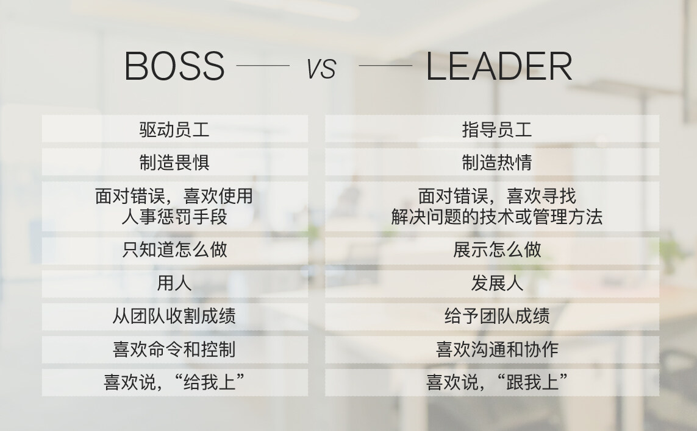

- 000 开篇词 洞悉技术的本质，享受科技的乐趣.md.html
- 001 程序员如何用技术变现（上）.md.html
- 002 程序员如何用技术变现（下）.md.html
- 003 Equifax信息泄露始末.md.html
- 004 从Equifax信息泄露看数据安全.md.html
- 005 何为技术领导力.md.html
- 006 如何拥有技术领导力.md.html
- 007 推荐阅读：每个程序员都该知道的事.md.html
- 008 Go语言，Docker和新技术.md.html
- 009 答疑解惑：渴望、热情和选择.md.html
- 010 如何成为一个大家愿意追随的Leader？.md.html
- 011 程序中的错误处理：错误返回码和异常捕捉.md.html
- 012 程序中的错误处理：异步编程和最佳实践.md.html
- 013 魔数 0x5f3759df.md.html
- 014 推荐阅读：机器学习101.md.html
- 015 时间管理：同扭曲时间的事儿抗争.md.html
- 016 时间管理：投资赚取时间.md.html
- 017 故障处理最佳实践：应对故障.md.html
- 018 故障处理最佳实践：故障改进.md.html
- 019 答疑解惑：我们应该能够识别的表象和本质.md.html
- 020 分布式系统架构的冰与火.md.html
- 021 从亚马逊的实践，谈分布式系统的难点.md.html
- 022 分布式系统的技术栈.md.html
- 023 分布式系统关键技术：全栈监控.md.html
- 024 分布式系统关键技术：服务调度.md.html
- 025 分布式系统关键技术：流量与数据调度.md.html
- 026 洞悉PaaS平台的本质.md.html
- 027 推荐阅读：分布式系统架构经典资料.md.html
- 028 编程范式游记（1）- 起源.md.html
- 029 编程范式游记（2）- 泛型编程.md.html
- 030 编程范式游记（3） - 类型系统和泛型的本质.md.html
- 031 Git协同工作流，你该怎样选.md.html
- 032 推荐阅读：分布式数据调度相关论文.md.html
- 033 编程范式游记（4）- 函数式编程.md.html
- 034 编程范式游记（5）- 修饰器模式.md.html
- 035 编程范式游记（6）- 面向对象编程.md.html
- 036 编程范式游记（7）- 基于原型的编程范式.md.html
- 037 编程范式游记（8）- Go 语言的委托模式.md.html
- 038 编程范式游记（9）- 编程的本质.md.html
- 039 编程范式游记（10）- 逻辑编程范式.md.html
- 040 编程范式游记（11）- 程序世界里的编程范式.md.html
- 041 弹力设计篇之“认识故障和弹力设计”.md.html
- 042 弹力设计篇之“隔离设计”.md.html
- 043 弹力设计篇之“异步通讯设计”.md.html
- 044 弹力设计篇之“幂等性设计”.md.html
- 045 弹力设计篇之“服务的状态”.md.html
- 046 弹力设计篇之“补偿事务”.md.html
- 047 弹力设计篇之“重试设计”.md.html
- 048 弹力设计篇之“熔断设计”.md.html
- 049 弹力设计篇之“限流设计”.md.html
- 050 弹力设计篇之“降级设计”.md.html
- 051 弹力设计篇之“弹力设计总结”.md.html
- 052 区块链技术 - 区块链的革命性及技术概要.md.html
- 053 区块链技术 - 区块链技术细节 - 哈希算法.md.html
- 054 区块链技术 - 区块链技术细节 - 加密和挖矿.md.html
- 055 区块链技术 - 去中心化的共识机制.md.html
- 056 区块链技术 - 智能合约.md.html
- 057 区块链技术 - 传统金融和虚拟货币.md.html
- 058 管理设计篇之分布式锁.md.html
- 059 管理设计篇之配置中心.md.html
- 060 管理设计篇之边车模式.md.html
- 061 管理设计篇之服务网格.md.html
- 062 管理设计篇之网关模式.md.html
- 063 管理设计篇之部署升级策略.md.html
- 064 性能设计篇之缓存.md.html
- 065 性能设计篇之异步处理.md.html
- 066 性能设计篇之数据库扩展.md.html
- 067 性能设计篇之秒杀.md.html
- 068 性能设计篇之边缘计算.md.html
- 069 程序员练级攻略（2018）：开篇词.md.html
- 070 程序员练级攻略（2018）：零基础启蒙.md.html
- 071 程序员练级攻略（2018）：正式入门.md.html
- 072 程序员练级攻略（2018）：程序员修养.md.html
- 073 程序员练级攻略（2018）：编程语言.md.html
- 074 程序员练级攻略：理论学科.md.html
- 075 程序员练级攻略（2018）：系统知识.md.html
- 076 程序员练级攻略（2018）：软件设计.md.html
- 077 程序员练级攻略（2018）：Linux系统、内存和网络.md.html
- 078 程序员练级攻略（2018）：异步IO模型和Lock-Free编程.md.html
- 079 程序员练级攻略（2018）：Java底层知识.md.html
- 080 程序员练级攻略（2018）：数据库.md.html
- 081 程序员练级攻略（2018）：分布式架构入门.md.html
- 082 程序员练级攻略（2018）：分布式架构经典图书和论文.md.html
- 083 程序员练级攻略（2018）：分布式架构工程设计.md.html
- 084 程序员练级攻略（2018）：微服务.md.html
- 085 程序员练级攻略（2018）：容器化和自动化运维.md.html
- 086 程序员练级攻略（2018）：机器学习和人工智能.md.html
- 087 程序员练级攻略（2018）：前端基础和底层原理.md.html
- 088 程序员练级攻略（2018）：前端性能优化和框架.md.html
- 089 程序员练级攻略（2018）：UIUX设计.md.html
- 090 程序员练级攻略（2018）：技术资源集散地.md.html
- 091 程序员面试攻略：面试前的准备.md.html
- 092 程序员面试攻略：面试中的技巧.md.html
- 093 程序员面试攻略：面试风格.md.html
- 094 程序员面试攻略：实力才是王中王.md.html
- 095 高效学习：端正学习态度.md.html
- 096 高效学习：源头、原理和知识地图.md.html
- 097 高效学习：深度，归纳和坚持实践.md.html
- 098 高效学习：如何学习和阅读代码.md.html
- 099 高效学习：面对枯燥和量大的知识.md.html
- 100 高效沟通：Talk和Code同等重要.md.html
- 101 高效沟通：沟通阻碍和应对方法.md.html
- 102 高效沟通：沟通方式及技巧.md.html
- 103 高效沟通：沟通技术.md.html
- 104 高效沟通：好老板要善于提问.md.html
- 105 高效沟通：好好说话的艺术.md.html
- 106 加餐 谈谈我的“三观”.md.html
- 107 结束语 业精于勤，行成于思.md.html
- 捐赠
010 如何成为一个大家愿意追随的Leader？
之前的文章，我们分享过技术领导力（leadership）的相关话题，主要讨论的是如何有技术上的领先优势，而不是如何成为一个技术管理者。今天的文章中，我们着重聊聊如何成为一个大家愿意跟随的技术领导者（Leader）。注意，Leader 不是管理者，不是经理，不是职称，而一个领头人。
所谓领头人和经理或管理者的最大差别就是，领头人（Leader）是被大家所追随的，而经理或管理者（Boss）则是一种行政和职位上的威慑。说白了，Leader 的影响力来自大家愿意跟随的现象，而经理或管理者的领导力来自职位和震慑，这两者是完全不同的。
Leader 和 Boss 的不同
说白了，Leader 是大家跟我一起上，而 Boss 则是大家给我上，一个在团队的前面，一个在团队的后面。
具体上来说，这两者的不同点如下。
Boss 是驱动员工，Leader 是指导员工。在面对事情或是项目的时候，Boss 制定时间计划，并且推动（push）和鞭策员工完成工作，而 Leader 则是和员工一起讨论工作细节，指导员工关注工作的重点，和员工一起规划出（work out）工作的方向和计划，并且在工作中和员工一起解决细节难题，帮助员工完成工作。
Boss 制造畏惧，Leader 制造热情。Boss 在工作中是用工作职位级别压人，用你的绩效考核来制造威慑，让员工畏惧他，从而推行工作。而 Leader 在工作中通过描绘远景，制造激动人心的目标来鼓舞和触发团队的热情和斗志。
Boss 面对错误喜欢使用人事惩罚的手段，而 Leader 面对错误喜欢寻找解决问题的技术或管理方法。惩罚员工和解决问题完全是两码事，Boss 因为并不懂技术也并不懂问题的细节，所以他们只能使用惩罚这样的手段，而 Leader 通常是喜欢解决问题的技术型人才，所以，他们会深入技术细节，从技术上找到既治标又治本的解决问题的技术方案或管理方式。
Boss 只是知道怎么做，而 Leader 则是展示怎么做。一个好 Leader 的最大特点就是 Lead by Example，以身作则，用身教而不是言教。而 Boss 只是在说教，总是在大道理上说的一套又一套的，而从来不管技术细节。
Boss 是用人，而 Leader 是发展人。Boss 不关心人的发展，把人当成劳动力。而 Leader 则会看到人的潜力和特长，通过授权、指导和给员工制定成长计划让员工成长，从而发展员工。所以，我们通常可以看到 Boss 总是说自己的员工有这个问题有哪个问题，而 Leader 总是说，如何让员工成长以解决员工个人的各种问题。
Boss 从团队收割成绩，而 Leader 则是给予团队成绩。Boss 通常都会把团队的成绩占为己有，虽然 Boss 会说这是团队的功劳，但基本上是一句带过。而 Leader 则是让团队成功，让团队的成员站在台前，自己甘当绿叶和铺路石。Leader 知道只有团队的每个人成功了，团队才会成功，所以，Leader 会帮助团队中的每个人更好更流畅地走向成功。
Boss 喜欢命令和控制（ Command + Control ），而 Leader 喜欢沟通和协作（ Communication + Cooperation ）。Boss 喜欢通过命令来控制员工的行为，从而达到团队的运转，而 Leader 喜欢通过沟通和协作来增加员工的参与感，从而让员工觉得这是自己的事，愿意为之付出。
Boss 喜欢说“给我上”，而 Leader 喜欢说“跟我上”。Boss 总是躲在团队后面，让团队冲锋陷阵，而 Leader 总是冲在前面用自己的行动领着团队浴血奋战。

从上面这些比较，我们应该可以看到 Boss 和 Leader 的不同，相信你已经有了一些了解和认识：什么才是一个真正的 Leader，而什么才是一个 Leader 应该有的素质和行为。
下面，我将结合我的一些经历和经验分享一下，如何才能成为一个大家愿意追随的人。
如何成为众人愿意追随的 Leader
说白了，要成为一个大家愿意追随的人，那么你需要有一些“征兆”。
- 帮人解问题。团队或身边大多数人都在问：“这个问题怎么办？”，而总是你能站出来告诉大家该怎么办。
- 被人所依赖。团队或身边大多数人在做比较关键的决定时，都会来找你咨询意见和想法。
要有这样的现象，你需要有技术领导力。关于技术领导力，你可以参看本专栏主题为《技术领导力》的文章。在那里，我们非常详细地讨论了什么是技术领导力，以及如何有技术领导力的问题。有没有技术领导力（Leadership），是成为一个 Leader 非常非常关键的因素。因为人们所想跟随的人通常都是比自己强比自己出色的人，或是能够跟他学到东西，能够跟他成长的人。
但是，有了技术领导力可能并不够，作为一个 Leader，你还需要有其它的一些能力和素质。比如，和我一起共事过的人和下属，他们会把我当成他们的朋友，他们会和我交流很多在员工和老板间比较禁忌的话题，比如：
- 有猎头或是别的公司来挖我的下属，我的下属会告诉我，并会征求我的意见。除了帮他们分析利弊，有些时候，我还会为我的下属准备去别的公司的面试。甚至，我有时候还会为我的下属介绍其它公司的机会。不要误会我（Don’t get me wrong），我并不是不站在公司利益的角度，我这样做完全是站在公司利益的角度。 这个世界很大，一个公司或是一个 Leader 很难做到把人一辈子留下来，因为人总是需要有不同的经历的，优秀的人更是如此。既然做不到把人留一辈子，那么不妨把这件事做得漂亮一些，这样会让要离开的员工觉得这个 Leader 或是这个公司的胸怀不一般，可能是他再也碰不到的公司或 Leader，反而会想留下来，或是离开后又想回来。
- 下属会来找我分享他的困难和他的彷徨，包括吐槽公司。一般来说，下属是不会找老板吐槽公司的，因为这是办公室中的禁忌。但是作为老板和经理，其实我们都知道，员工是一定会吐槽老板和公司的。既然做不到不让员工吐槽公司，那么不妨让这件事做得更漂亮一些——可以公开透明地说，而不是在背后说，因为在背后说对公司或是团队的伤害更大。
举了上面两个例子，我只是想告诉你一个 Leader 除了有技术领导力还需要有其它的素质和人格魅力。如果你的员工把这些看似禁忌的事和你分享向你倾吐，说明他们是何等信任你，何等看重你，这已经说明你对他的价值已非同寻常了，这份信任和托付对于一个 Leader 来说要小心呵护。
下面是我罗列的一些比较关键的除了技术领导力之外的一个 Leader 需要的素质。
赢得他人的信任。信任是人类一切活动的基础，人与人之间的关系是否好，完全都是基于信任的。对于信任来说，并不完全是别人相信你能做到某个事，还有别人愿意向你打开心扉，和你说他心里面最柔软的东西。而后者才是真正的信任。这还需要你的人格魅力，你的真诚，你的可信，你的价值观和你的情怀等一些诸多因素，才会让别人愿意找你分享心中的想法和情绪。
开放的心态 + 倾向性的价值观。这两个好像太矛盾了，其实并不是。我想说的是，对于新生事物要有开放的心态，对于每个人的观点都有开放的心态，但并不是要认同所有的观点和事情，成为一个油腔滑调的人。也就是说，我可以听进各种不同观点，并在讨论中根据自己的价值观对不同的观点做出相应的判断，而并不是不加判断全部采用。因为如果你要做一个 Leader，你需要有明确的方向和观点，而不是说一些放之四海皆准的完全正确的废话。我的经验告诉我，对于各种各样的技术都要持一种比较开放的态度，可以讨论优缺点，但不会争个是非对错，尤其对于新技术来说，更要开放。
然而，就价值观来说，还是需要有倾向性的，比如，我就倾向于不加班的文化，倾向于全栈，倾向于按职责分工而不是按技能分工，倾向于做一个 Leader 而不是 Boss，倾向于技术是第一生产力，倾向于 OKR 而不是 KPI……
我的这些倾向性可以让别人更清楚地明确我是一个什么样的人，而不会对我琢磨不透，一会东一会西只会让人觉得你太油了，反而会产生距离感和厌恶感。我认为，倾向性的价值观是别人是否可以跟随你的一个基础。
- Lead by Example。用自己的示例来 Lead，用自己的行为来向大家展示你的 Leadership。这就是说，你需要给大家做示范。很多时候，道理人人都知道，但未必人人都会做，知易行难，以身示范，一个示例会比讲一万遍道理都管用。对于软件开发来说，不写代码的架构师是根本不靠谱的。
所以，要做一个有人跟随的技术 Leader，你需要终身写代码，也就是所谓的 ABC – Always Be Coding。这样，你会得到更多的实际经验，能够非常明白一个技术方案的优缺点，实现复杂度，知道什么是 Best Practice，你的方案才会更具执行力和实践性。当有了执行力，你就会获得更多的成就，而这些成就会让更多的人来跟随你。
保持热情和冲劲。在这个世界上，有太多太多的东西会让人产生沮丧、不满、彷徨、迷茫、疲惫等这些负面情绪，但是几乎所有的人都不会喜欢在这样的情绪中生活，我们每个人都会去追求更为积极更为正面的生活方式。 所以，作为一个 Leader 无论在什么情况下，你都需要保持热情和冲劲，只有这样，你才会让别人有跟随的想法和冲动。 但是，所谓的保持热情和冲劲，并不是自欺欺人，也不是文过饰非，因为掩耳盗铃、掩盖问题，强颜欢笑的方式根本不是热情。真正的热情和冲劲是，正视问题，正视不足，正视错误，从中进行反思和总结得到更好的解决方案，不怕困难，迎刃而上。 正如鲁迅先生在《记念刘和珍君》中所说的那句话——“真的猛士，敢于直面惨淡的人生，敢于正视淋漓的鲜血”。
能够抓住重点，看透事物的本质。这个世界太复杂，有太多的因素和杂音在影响着我们的判断和决定。绝大多数人都会在多重因素中迷失或是纠结。作为一个 Leader，能够抓住主要矛盾，看清事物的本质，给出清楚无二义的观点或方向，简化复杂的事情，授道解惑、开启民智，让人豁然开朗、醍醐灌顶，才会让人追随之。
描绘令人激动的方向，提供令人向住的环境。我相信，我们每个人心中都有激动和理想，就算是被现实摧残得最凶残的人，他们已经忘却了心中那些曾经的激动和理想，但我相信也只是暂时的。一个好的 Leader 一定会把每个人心中最真善美的东西呼唤出来，并且还能让人相信这是有机会有可能做到的。
甘当铺路石，为他人创造机会。别人愿意跟随你，愿意和你共事，有一部分原因是你能够给别人带来更多的可能性和机会，别人觉得和你在一起能够成长，能够进步，你能够带着大家到达更高的地方。帮助别人其实就是帮助自己，成就他人其实也是在成就自己，这就像一个好的足球队一样，球队中的人都互相给队友创造机会，整个团队成功了，球队的每个人也就成功了。作为一个好的 Leader，你一定要在团队中创造好这样的文化和风气。
做一个好的 Leader 真的不容易，你需要比大家强很多，你需要比大家付出更多；你需要容天下难容之事，你还需要保持热情和朝气；你需要带领团队守护理想，你还需要直面困难迎刃而上……
也许，你不必做一个 Leader，但是如果你有想跟随的人，你应该去跟随这样的 Leader！
© 2019 - 2023 Liangliang Lee. Powered by gin and hexo-theme-book.